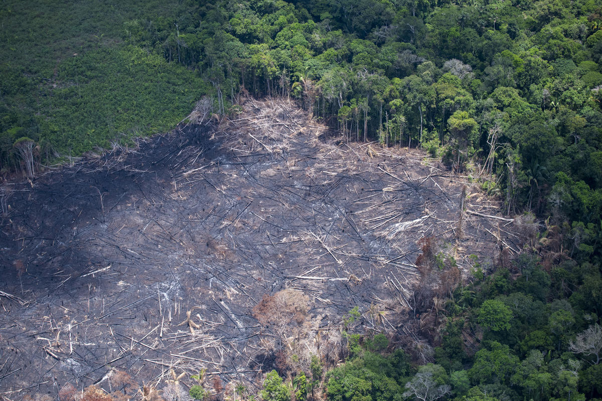
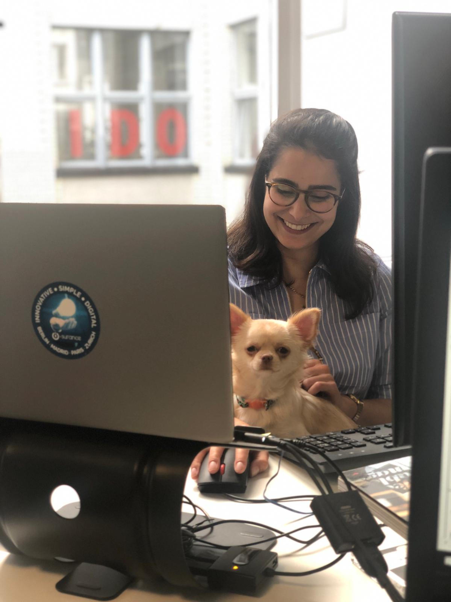

The news this week
Odebrecht scandal spills into Colombia
And the week before
 Bolsonaro government insists on limiting environmental protections and indigenous rightsWhy create this blog?
After moving out of Brazil I realised the journalistic failures in the country, which contribute to mass disinformation, suspicions and distrust, also meant it was nearly impossible to keep up with what was happening by following Brazilian news outlets. The solution I found was reading what are often much more complete and impartial news pieces from foreign outlets, and through this page I offer this same solution to you.
Who am I?
A Porto-alegrense who left Brazil in 2011 to study Economics and Political Science in London. Following a year of work in Paris and a Masters in Finance in the Netherlands I moved to Berlin, where I have been working and living ever since.
